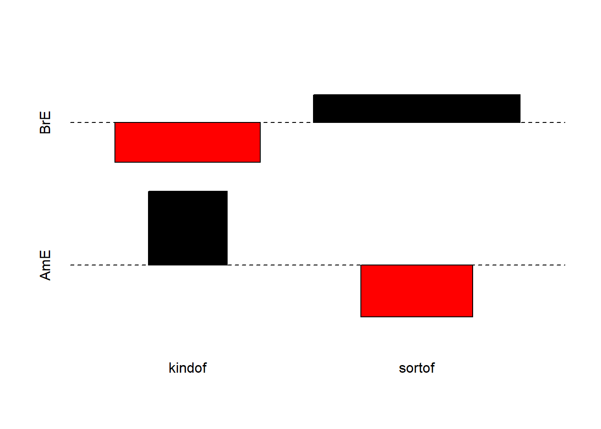
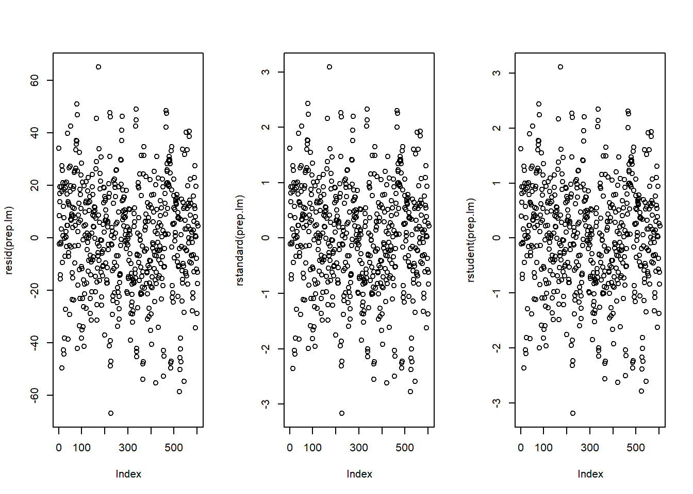
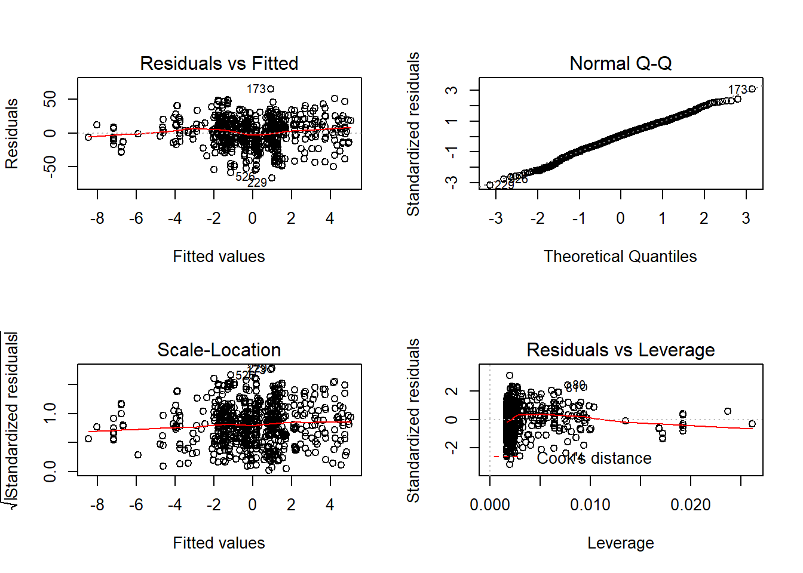

Basic Inferential Statistics
UQ SLC Digital Team
2019-01-21
1 Introduction
This tutorial introduces basic statistical techniques from inferential statistics for hypothesis testing. The first part of this section focuses on basic non-parametric tests such as the chi-square family of tests while the second part introduces simple regression models and discusses their underlying logic.
2 Non-Parateric Tests
This section focuses on test that do not require the data to be distributed normally. Tests that do not rewuire normal data are referred to as non-parametric tests (test that require the data to be distributed normally are analogously called parametric tests). We focus on non-parametric tests first as this family of test in frequently used in linguistics. In the later part of this section, we will focus on regression modelling where assumptions of about the data become more important.
2.1 Chi-Square Tests
To explore how chi-square (or chi-squared or simply \(\chi^{2}\)) tests work, we will test whether speakers of American English (AmE) and speakers of British English (BrE) differ in their use of the near-synonyms sort of and kind of as in “He’s sort of stupid” and “He’s kind of stupid”. As a first step, we formulate the hypothesis that we want to test (H\(_{1}\)) and its Nullhypothesis (H\(_{0}\)). The Alternativ- or Testhypothesis reads:
\(H_{1}\): Speakers of AmE and BrE differ with respect to their preference for sort of und kind of.
while the Nullhypothesis (H\(_{0}\)) states
\(H_{0}\) Speakers of AmE and BrE do not differ with respect to their preference for sort of und kind of.
The H\(_{0}\) claims the non-existence of something (which is the more conservative position) and in our example the non-existence of a correlation between variety of English and the use of sort of und kind of. The question now arises what has to be the case in order to reject the H\(_{0}\) in favor of the H\(_{1}\).
To answer this question, we require information about the probability of error, i.e. the probability that the H\(_{0}\) does indeed hold for the entire population. Before performing the chi-square test, we follow the convetion that the required significance level is 5 percent. In other words, we will reject the H\(_{0}\) if the likelyhood for the H\(_{0}\) being true is less than 5 percent given the distribution of the data. In that case, i.e. in case that the likelihood for the H\(_{0}\) being true is less than 5 percent, we consider the result of the chi-square test as statistically significant. This means that the observed distribution makes it very unlikey that there is no correlation between the variety of English and the use of sort of and kind of.
Let us now assume that we have performed a search for sort of and kind of in two corpora representing American and British English and that we have obtained the following freqeuncies:
| BrE | AmE | |
|---|---|---|
| kindof | 181 | 177 |
| sortof | 655 | 67 |
In a first step, we now have to caluculate the row and column sums of our table.
I had the same question. I have tried all solutions provided above and none of them worked… But I have found a solution that works for me, and hopefully for others too.
| BrE | AmE | Total | |
|---|---|---|---|
| kindof | 181 | 655 | 836 |
| sortof | 177 | 67 | 244 |
| Total | 358 | 722 | 1080 |
Next, we calculate, the values that would have expected if there was no correlation between variety of English and the use of sort of and kind of. In order to get these “expected” freqeuncies, we apply the equation below to all cells in our table.
\(\frac{Column total*Row total}{Overall total}\)
In our example this means that for the cell with [+]BrE [+]kindof we get:
\(\frac{836*358}{1080} = \frac{299288}{1080} = 277.1185\)
For the entire table this means we get the following expected values:
| BrE | AmE | Total | |
|---|---|---|---|
| kindof | 277.11850 | 558.8815 | 836 |
| sortof | 80.88148 | 163.1185 | 244 |
| Total | 358.00000 | 722.0000 | 1080 |
In a next step, we calculate the contribution of each cell to the overall \(\chi^{2}\) value (\(\chi^{2}\) contribution). To get \(\chi^{2}\) contribution for each cell, we apply the equation below to each cell.
\(\frac{(observed – expected)^{2}}{expected}\)
In our example this means that for the cell with [+]BrE [+]kindof we get:
\(\frac{(181 – 277.1185)^{2}}{277.1185} = \frac{-96.1185^{2}}{277.1185} = \frac{9238.766}{277.1185} = 33.33868\)
For the entire table this means we get the following \(\chi^{2}\) values:
| BrE | AmE | Total | |
|---|---|---|---|
| kindof | 33.33869 | 16.53082 | 49.86951 |
| sortof | 114.22602 | 56.63839 | 170.86440 |
| Total | 147.56470 | 73.16921 | 220.73390 |
The sum of \(\chi^{2}\) contributions in our example is 220.7339. To see if this value is staistically significant, we need to calculate the degrees of freedom because the \(\chi\) distribution differes across degrees of freedom. Degrees of freedom are calculated accroding to the equation below.
\(DF = (rows -1) * (columns – 1) = (2-1) * (2-1) = 1 * 1 = 1\)
In a last step, we check whether the \(\chi^{2}\) value that we have calculated is higher thana critical value (in which case the correlation in our table is significant). Degrees of freedom are relevcvenat here because the critical values is dependent upon the degrees of freedom: the more degrees of freedom, the higher the critical value, i.e. the harder it is to breach ethe level of significance.
Since theer is only 1 degree of freedom in our case, we need to consider only the first column in the table of critical values below.
| DF | p<.05 | p<.01 | p<.001 |
|---|---|---|---|
| 1 | 3.84 | 6.64 | 10.83 |
| 2 | 5.99 | 9.21 | 13.82 |
| 3 | 7.82 | 11.35 | 16.27 |
| 4 | 9.49 | 13.28 | 18.47 |
| 5 | 11.07 | 15.09 | 20.52 |
Since the \(\chi^{2}\) value that we have calculated is much higher than the critical value provided for p<.05, we can reject the \(H_{0}\) and may now claim that speakers of AmE and BrE differ with respect to their preference for sort of und kind of.
Before we summarize the results, we will calculate the effect size which is a measure for how strong the correleations are.
2.1.1 Effect Sizes in Chi-Square
Effect sizes are important because they correlations may be highly significant but the effect between variables can be extremely weak. The effect size is therefore a measure how strong the correlation or the explanatory and predictive power between variables is.
The effect size measure for \(\chi^{2}\) tests can be either the \(\phi\)-coeffizient (phi-coeffizient) or Cramer’s \(\phi\) (Cramer’s phi). The \(\phi\)-coeffizient is used when dealing with 2x2 tables while Cramer’s \(\phi\) is used when dealing with tables with more than 4 cells. The \(\phi\) coeffizient can be calculated by using the equation below (N = overall sample size).
\(\phi = \sqrt{\frac{\chi^{2}}{N}}\)
In our case, this means:
\(\phi = \sqrt{\frac{220.7339}{1080}} = \sqrt{0.2043832} = 0.4520876\)
The \(\phi\) coefficient varies between 0 (no effect) and 1 (perfect correlation). Für die Einteilung in schwache, moderate und starke Effekte kann man der Einteilung für \(\omega\) (kleines Omega) folgen, sodass man bei Werten von .1 von schwacher, um einen Wert bei 0.3 von moderater und ab .5 von einer starken Effektstärke sprechen kann . Wir haben es in diesem Beispiel also mit einem mittleren Effekt oder Zusammenhang zu tun.
2.1.2 Chi-Square in R
Bevor wir dazu kommen, wie die Ergebnisse zusammengefasst werden, werden wir im Folgenden den \(\chi^{2}\) test in R! rechnen. Zusätzlich zu den Schritten, die wir oben durchlaufen sind, werden wir die Daten graphisch darstellen.
Im ersten Schritt laden wir die Daten ein:
# load data
chidata <- read.table("http://martinschweinberger.de/docs/data/dt001.txt", header = F, sep = "\t", quote = "", comment.char = "")
# ad column and row names
colnames(chidata) <- c("BrE", "AmE")
rownames(chidata) <- c("kindof", "sortof")
# inspect data
chidata## BrE AmE
## kindof 181 177
## sortof 655 67We will now visualize the data with an association and a mosaic plot.

Die Farbe des Mosaikplots (rechts) deutet auf einen signifikanten Unterschied hin. Auch der Assoziationsplot (links) deutet dies an indem die Verteilung der Balken in den beiden Panels gespiegelt ist. Im nächsten Schritt werden wir direkt den Test durchführen.
# run chi square test
chisq.results <- chisq.test(chidata, corr = F)
# inspect results
chisq.results##
## Pearson's Chi-squared test
##
## data: chidata
## X-squared = 220.73, df = 1, p-value < 2.2e-16Wir sehen, dass die Ergebnisse, die R uns berichtet dieselben sind, wie die, die wir vorher ausgerechnet haben. Im nächsten Schritt werden wir die Effektstärke berechnen.
# calculate effect size
phi.coefficient = sqrt(chisq.results$statistic / sum(chidata) * (min(dim(chidata))-1))
# inspect effect size
phi.coefficient## X-squared
## 0.4520877Nach der Visualisierung der Daten, dem Testen und der Berechnung der Effektstärke können wir nun dazu übergehen uns damit zu beschäftigen, wie unsere Ergebnisse zusammengefasst werden sollten.
2.1.3 Summarizing Chi-Square Results
Man kann das Ergebnis unseres Beispiels wie folgt zusammenfassen: Ein \(\chi\)^{2}-Test bestätigt einen hoch signifikanten Zusammenhang mittlerer Stärke zwischen der Varietät des Englischen und der Verwendung der Heckenausdrücke und (\(\chi\)^{2} = 220.73, df = 1, p \(<\) .001***, \(\phi\) = .452).
2.1.4 Requirements of Chi-Square
To provide reliable results, 80 percent of cells in a table to which the chi-square test is applied have to have expected values of 5 or higher and at most 20 percent of expected values can be smaller than 5 (vgl.[@bortz1990verteilungsfreie] 98). In addition, none of the expected values can be smaller than 1 (vgl. [@bortz1990verteilungsfreie] 136) because then, the estimation, which relies on the \(\chi\)^{2}-distribution, becomes too imprecise to allow meaningful inferences [@cochran1954somemethods].
If these requierments are violated, then the Fisher’s Exact Test is more reliable and offers the additional advantage that these tests can also be applied to data that represent very small sample sizes. When applying the Fisher’s Exact Test, the probabilities for all possibles outcomes are calculated and the summed probability for the observed or more extreme results are determined. If this sum of probabilities exceeds five percent, then the result is deemed statistically significant.
2.2 Extensions of Chi-Square
In the following, we will have a look at tests and methods that can be used if the requirements for ordinary (Pearson’s) chi-square tests are violated and their use would be inaapropriate
2.2.1 The Yates-Correction
If all requirements for ordinary chi-square tests are acceptable and only the sample size is the issue, then applying a so-called Yates-correction may be appropriate. This type of correction is used in cases where the overall sample size lies inbetween 60 and 15 cases ([@bortz1990verteilungsfreie] 91). The difference between the ordinary chi-square and a Yates-corrected chi-square lies in the fact that the Yates-corrected chi-square is calculated according to equation XXX below.
\(\frac{(|observed – expected|-0.5)^{2}}{expected}\)
Damit würde sich für unser Beispiel anstatt Tabelle ({) die folgende Tabelle () führen. Es ist hierbei zu bedenken, dass in unserem Fall keine Yates-Korrektur angebracht wäre, da unsere Stichprobe den Wert von 60 Fällen stark überschreitet.
| Variant | BrE | AmE | Total |
|---|---|---|---|
| kind of | 32.9927 | 113.0407 | 146.0335 |
| sort of | 16.3593 | 56.0507 | 72.41 |
| Total | 49.352 | 169.0914 | 218.4434 |
Es zeigt sich, dass die Yates-Korrektur zu einem etwas geringerem \(\chi\)^{2}-Wert führt und sie somit zu konservativeren Ergebnissen führt, als es nach Pearson der Fall wäre.
2.2.2 Chi-Square within 2*k Tables
Obwohl der \(\chi\)^{2}-Test weit verbreitet ist und insgesamt sehr robust ist, wird er doch häufig falsch verwendet. Dies geschieht insbesondere dann, wenn man den Test auf Tabellen anwendet, die mehr als zwei Spalten oder Zeilen haben. Es ist sehr wichtig festzuhalten, dass man für Untersuchungen, in denen man Teiltabellen auf Signifikanz testen möchte nicht den gewöhnlichen \(\chi\)^{2}-Test, sondern abgewandelte Varianten nutzen muss. Im Folgenden sollen zwei Beispiele darstellen, wie man in solchen Fällen vorgehen sollte.
Im ersten Fall handelt es sich um eine Tabelle mit 2 Spalten aber mehreren Zeilen, einer sogenannten 2*k-Tabelle. Um zu testen, ob eine der Ausprägungen in den Zeilen signifikant häufiger ist als eine andere sollte man die Formel, die von dargelegt wird, implementieren.
In diesem Beispiel geht es darum, ob weiche Röntgenstrahlen sich von harten Röntgenstrahlen im Hinblick auf das Erreichen bzw. Nicht-Erreichen des Mitosestadiums bei Heuschreckenneuroblasten unterscheiden. Die zugrundeliegende Datentabelle sieht wie folgt aus.
| Mitosis not reached | Mitosis reached | Total | |
|---|---|---|---|
| X-ray soft | 21 | 14 | 35 |
| X-ray hard | 18 | 13 | 31 |
| Beta-rays | 24 | 12 | 36 |
| Light | 13 | 30 | 43 |
| Total | 76 | 69 | 145 |
Würde man einen einfachen \(\chi\)^{2}-Test rechnen, so würde man unterschlagen, dass die Daten in Zusammenhang mit anderen Daten erhoben wurden und somit nicht unabhängig sind. Wir werden zunächst einen einfachen (falschen) \(\chi^{2}\)-Test rechnen, um dann die korrekte Variante zu berechnen, und die Ergebnisse zu vergleichen.
# load function
source("http://martinschweinberger.de/docs/scripts/x2.2k.r")
# create table generieren
chitb2 <- matrix(c(21, 14, 18, 13, 24, 12, 13, 30), byrow = T, nrow = 4)
colnames(chitb2) <- c("erreicht", "nichterreicht")
rownames(chitb2) <- c("rweich", "rhart", "beta", "licht")
# extract subtable
chitb3 <- matrix(c(21, 14, 18, 13), byrow = T, nrow = 2)
colnames(chitb3) <- c("erreicht", "nichterreicht")
rownames(chitb3) <- c("rweich", "rhart")
# simple x2-test
chisq.test(chitb3, corr = F)##
## Pearson's Chi-squared test
##
## data: chitb3
## X-squared = 0.025476, df = 1, p-value = 0.8732x2.2k(chitb2, 1, 2)## $Description
## [1] "rweich against rhart by erreicht vs nichterreicht"
##
## $`Chi-Squared`
## [1] 0.025
##
## $df
## [1] 1
##
## $`p-value`
## [1] 0.8744
##
## $Phi
## [1] 0.013
##
## $Report
## [1] "Conclusion: the null hypothesis cannot be rejected! Results are not significant!"Hier die Ergebnisse in tabellarischer Form.
| chi-square | chi-square in 2*k-tables | |
|---|---|---|
| chi-squared | 0.0255 | 0.025 |
| p-value | 0.8732 | 0.8744 |
Wie sich zeigt, kommen zwar beide Tests zu den gleichen Ergebnissen, jedoch unterscheiden sich die Resultate minimal. Dies ist nicht immer der Fall, da die Ergebnisse stark variieren können!
2.2.3 Chi-Square within z*k Tables
Eine weitere Anwendung, bei der der \(\chi\)^{2}-Test häufig inkorrekter Weise verwendet wird, ist das Testen von Teilen von Tabellen mit mehr als zwei Zeilen und mehr als zwei Spalten, d.h. z*k-Tabellen (z: Zeile, k: Kolumne). Ein Beispiel wird in besprochen, der auch das -Skript für die korrekte Version des \(\chi^{2}\)-Test erstellt hat.
Laden wir zuerst die Daten, die in dem Beispiel von besprochen werden, in dem es darum geht, ob sich nicht nur Register und EMOTION-Metaphern unterscheiden, sondern auch darum, ob sich gesprochene Konversationen von Fiktion im Gebrach von EMOTION IST LICHT und EMOTION IST EINE NATURKRAFT unterscheiden.
# create table
x <- matrix(c(8, 31, 44, 36, 5, 14, 25, 38, 4, 22, 17, 12, 8, 11, 16, 24), ncol=4)
attr(x, "dimnames")<-list(Register=c("acad", "spoken", "fiction", "new"),
Metaphor = c("Heated fluid", "Light", "NatForce", "Other"))Es ergibt sich aus diesen Daten Tabelle ().
| Register | Heated fluid | Light | NatForce | Other |
|---|---|---|---|---|
| acad | 8 | 5 | 4 | 8 |
| spoken | 31 | 14 | 22 | 11 |
| fiction | 44 | 25 | 17 | 16 |
| new | 36 | 38 | 12 | 24 |
Würden wir einen normalen (hier inkorrekten) \(\chi\)^{2}-Test verwenden, so würde sich ergeben, dass sich gesprochene Konversationen nicht signifikant von Fiktion im Gebrach von EMOTION IST LICHT und EMOTION IST EINE NATURKRAFT unterscheiden (\(\chi^{2}\)=3.3016, df=1, p\(=\).069, \(\phi\) = .2057).
# create table
subtable <- matrix(c(14, 25, 22, 17), ncol=2)
chisq.results <- chisq.test(subtable, correct=FALSE) # WRONG!
phi.coefficient = sqrt(chisq.results$statistic / sum(subtable) * (min(dim(subtable))-1))
chisq.results##
## Pearson's Chi-squared test
##
## data: subtable
## X-squared = 3.3016, df = 1, p-value = 0.06921phi.coefficient## X-squared
## 0.2057378Die korrekte Analyse berücksichtigt hierbei, dass es sich um eine Untertabelle handelt, die nicht unabhängig von der Gesamttabelle ist. Dies bedeutet, dass die korrekte Analyse die gesamte Anzahl der Fälle, sowie die Gesamtzeilen- und Gesamtspaltensummen zu berücksichtigen sind .
Um die korrekte Analyse durchführen zu können, muss die Analyse von Funktion von implementiert oder direkt die Funktion von Gries eingelesen und auf die Teiltabelle angewandt werden.
# load function for chi square test for subtables
source("http://martinschweinberger.de/docs/scripts/sub.table.r")
# apply test
results <- sub.table(x, 2:3, 2:3, out="short")
# inspect results
results## $`Whole table`
## Metaphor
## Register Heated fluid Light NatForce Other Sum
## acad 8 5 4 8 25
## spoken 31 14 22 11 78
## fiction 44 25 17 16 102
## new 36 38 12 24 110
## Sum 119 82 55 59 315
##
## $`Sub-table`
## Metaphor
## Register Light NatForce Sum
## spoken 14 22 36
## fiction 25 17 42
## Sum 39 39 78
##
## $`Chi-square tests`
## Chi-square Df p-value
## Cells of sub-table to whole table 7.2682190 3 0.06382273
## Rows (within sub-table) 0.2526975 1 0.61518204
## Columns (within sub-table) 3.1519956 1 0.07583417
## Contingency (within sub-table) 3.8635259 1 0.04934652The results show that the difference is, in fact, statistically significant (\(\chi^{2}\)=3.864, df=1, p=.049*).
2.2.4 Chi-Square Excercises
1.Sie sind interessiert daran, ob junge oder alte Sprecher häufiger sprachlich auf sich selbst verweisen, da Sie die Hypothese haben, dass – im Gegensatz zur weitläufig gängigen Ansicht – ältere Menschen eher narzisstisch sind als jüngere Menschen. Sie extrahieren aus einem Korpus folgende Verteilung.
| 1SGPN | PN without 1SG | Total | |
|---|---|---|---|
| Jung | 61 | 43 | 104 |
| Alt | 42 | 36 | 78 |
| Total | 103 | 79 | 182 |
Rechnen Sie nun einen \(\chi^{2}\) test und fassen Sie Ihre Ergebnisse korrekt zusammen.
- Sie sind nun daran interessiert, ob junge Männer oder junge Frauen häufiger das Wort whatever verwenden, da Sie davon ausgehen, dass entgegen einiger früherer Beobachtungen junge Männer häufiger whatever nutzen als junge Frauen. Sie extrahieren aus einem Korpus folgende Verteilung.
| YoungMales | YoungFemales | Total | |
|---|---|---|---|
| whatever | 17 | 55 | 71 |
| other words | 345128 | 916552 | 1261680 |
| Total | 345145 | 916607 | 1261752 |
Rechnen Sie nun einen \(\chi^{2}\) test und fassen Sie Ihre Ergebnisse korrekt zusammen.
- Suchen Sie sich einen Partner und diskutieren das Verhältnis von Signifikanzwert und Effektstärke. Suchen Sie sich nun einen anderen Partner und sprechen Sie über potentielle Probleme, die entstehen, wenn man die Häufigkeit von Wörtern gegenüber allen anderen Wörtern testet.
2.3 Other Non-Parametric Tests
%Wenn die vorliegende abhängige Variable nicht nominal oder kategorial, sondern ordinal ist, d.h. wenn die abhängige Variable Rangdaten darstellt, dann ist der \(\chi\)^{2}-Test nicht anzuwenden. In solchen Fällen sollte man auf Tests zurückgreifen, die für ordinale Variablen ausgelegt sind. Im Folgenden werden die wichtigsten bi-variaten Tests für Rangdaten dargestellt.
2.3.1 Mann-Whitney U Test
%Häufig kommt es vor, dass numerische abhängige Variablen entweder in Rangdaten transformiert werden müssen (bspw. da die Verteilung der Residuen/Fehler keine einfache lineare Regression oder einfache Varianzanalyse zulässt) oder die abhängige Variable von vornherein nach Rängen gestuft ist. In solchen Fällen kann kein \(\chi\)^{2}-Test gerechnet werden, da dieser von nominalen oder kategorialen Variablen ausgeht und nicht auf Rangdaten angepasst werden darf. Man nutzt in solche Fällen den Mann-Whitney U Test, der sowohl in Fällen anwendbar ist, wo es sich um abhängige (dieselben Versuchspersonen werden unter mindestens zwei Bedingungen getestet), wie auch unabhängige Gruppen handelt (unterschiedliche Versuchspersonen werden unter mindestens zwei Bedingungen getestet). Wenn man es mit unabhängigen Gruppen, d.h. unterschiedlichen Versuchspersonen in den Gruppen zu tun hat, und die abhängige Variable eine Rangfolge darstellt, nutzt man folgenden Code, um den Mann-Whitney U Test in zu implementieren.
# y ist aV und numerisch, x ist uV und ein binaerer faktor
#wilcox.test(y ~ x)
# y1 ist aV, y2 ist uV und beide sind numerisch
#wilcox.test(y1, y2)%Hat man es mit abhängigen Gruppen zu tun, muss man das Argument gleich setzen (siehe unten).
# dependent 2-group Wilcoxon Signed Rank Test
#wilcox.test(y1,y2,paired=TRUE) # where y1 and y2 are numeric2.3.2 Kruskal Wallis Test
%Bei dem Kruskal Wallis Test handelt es sich um eine einfache Varianzanalyse, die anstatt auf numerische Werte auf die Rangdaten angewandt wird.
#y <- c(15, 13, 10, 8, 37, 23, 31, 52, 11, 17)
#x <- c("A", "A", "A", "A", "A", "B", "B", "B", "B", "B")
# Kruskal Wallis Test One Way Anova by Ranks
#kruskal.test(y~x) # where y1 is numeric and x is a factor2.3.3 Excercises for other non-parametric tests
3 Simple Linear Regression
This chapter focuses on a very widely used statistical method which is called regression. Regressions are used when we try to understand how independent variables correlate with a dependent or outcome variable. So if you want to investigate how certain criteria affect an outcome, then a regression is the way to go. We will have a look at two simple examples to understand what the concepts underlying a regression mean and how a regression works. After that, we will turn to a more compley case and we will implement a multiple linear regression. The R-Code, that we will use, is based on [@field2012discovering].
3.1 Introduction
Although the basic logic underlying regressions is identical to the conceptual underpinnings of analysis of variance (ANOVA), a related method, sociolinguistists have traditionally favoured regression analysis in their studes while ANOVAs have been the method of choice in psycholinguistics. The preference for either method is grounded in historical happenstances and the culture of these subdisciplines rather than in methodological reasoning.
A minor difference between regressions and ANOVA lies in the fact that regressions are based on the \(t\)-distribution while ANOVAs use the \(F\)-distribution (however, the \(F\)-value is merely t2). Both \(t\)- and \(F\)-values report on the ratio between explained and unexplained variance.
The idea behind regression analysis is expressed formaly in equation and can best be described graphically: Imagine drawing a line through points in a scatterplot (Grafik left panel).
\(f_{(x)} = \alpha + \beta_{1}x_{i} + \epsilon\) {#eq:slm}
Regressions aim to find that line which has the minimal summed distance between points and the line (Grafik center panel). Technically speaking, the aim of a regression is to find the line with the minimal deviance or the line with the minimal sum of residuals (variance) (Grafik right panel). This means that the sum of the length of the lines between the points and the lines should be minimal. The slope of the line is called coefficient and the point where the line crosses the y-axis is called the intercept.
Scatterplots mit Regressionsgeraden (mitte) und Residuen (rechts)
A word about standard errors (SE) is in order here because most commonly used statistics programs will provide SE values when reportigng regression models. The SE is a measure that tells us how much the coefficients were to vary if the same regression were applied to many samples from the same population. A relatively small SE value therefore indicates that the coefficients will ermain very stable if the same regression model is fitted to many different samples with identical parameters. In contrast, a large SE tells you that the model is volatile and not very stable or reliable as the coefficients vary substantially if the model is applied to many samples.
3.2 Example 1: Preposition Use across Real-Time
We will now turn to our first example. In this example, we will investiagte whether the frequency of prepositions has changed from Middle English to Late Modern English. The reasoning behind this example is that Old English was highly sythetic compared with Present-Day English which comparatively analytic. In other words, while Old English speakers used case to indicate syntactic relations, speakers of Present-Day English use word order and prepositions to indicate syntactic relationships. This means that the loss of case had to be compensated by different strategies and maybe these strategies continued to develop and incerase in frequency even after the change from synthetic to analytic had been mostly accomplished. And this prolonged change in compensatory strategies is what this example will focus on.
The analysis is based on data extrcted from the Penn Corpora of Historical English (see http://www.ling.upenn.edu/hist-corpora/), that consistss of 603 texts written between 1125 and 1900. In preparation of this example, all elements that were part-of-speech tagged as prepositions were extracted from the PennCorpora.
Then, the relative frequencies (per 1,000 words) of prepositions per text were calculated. This frequency of prepositions per 1,000 words represents our dependent variable. In a next step, the date when each letter had been written was extracted. The resulting two vectors were combined into a table which thus contained for each text, when it was written (independent variable) and its relative freqeuncy of prepositions (dependent or outcome variable).
A regression analysis will follow the steps described below: Die folgende Ablauf ist typisch für Regressionsanalysen.
- Extraction and processing of the data
- Data visualization
- Applying the regression analysis to the data
- Diagnosing the regression model and checking whether or not basic model assumptions have been violated.
3.2.1 Simple Linear Regression in R
In a first step, we prepare our session by cleaning the work space, installing libraries that we need for the analysis, and loading the libraries and fucntions.
# clean workspace
rm(list=ls(all=T))
# installing neccessary or helpful packages/libraries (if you have not sone so previously)
# (remove the # sign to activate the code)
#install.packages("QuantPsyc")
#install.packages("car")
# initialise packages/libraries
library(QuantPsyc)
library(car)
library(ggplot2)
# function which allows us to plot several plots in one window
source("http://martinschweinberger.de/docs/scripts/multiplot_ggplot2.r")
# function for summarizing simple linear regression models
source("http://martinschweinberger.de/docs/scripts/slr.summary.tb.r") After perparing our session, we can now load and inspect the data to get a first implression of its properties.
# load data
slr.data <- read.delim("http://martinschweinberger.de/docs/data/slr.data.txt", header = TRUE)
# attach data
attach(slr.data)
# unnoetige spalten entfernen
slr.data <- as.data.frame(cbind(slr.data$datems, slr.data$P.ptw))
# spaltennamen hinzufuegen
colnames(slr.data) <- c("year", "prep.ptw")
# entfernen unvollstaendiger datenpunkte
slr.data <- slr.data[!is.na(slr.data$year) == T, ]
# erste zeilen des datensatzes betrachten
head(slr.data)## year prep.ptw
## 1 1736 166.01
## 2 1711 139.86
## 3 1808 130.78
## 4 1878 151.29
## 5 1743 145.72
## 6 1807 152.59# struktur des datensatzes betrachten
str(slr.data)## 'data.frame': 603 obs. of 2 variables:
## $ year : num 1736 1711 1808 1878 1743 ...
## $ prep.ptw: num 166 140 131 151 146 ...# eigenschaften des datensatzes betrachten
summary(slr.data)## year prep.ptw
## Min. :1125 Min. : 63.97
## 1st Qu.:1545 1st Qu.:115.66
## Median :1615 Median :130.78
## Mean :1619 Mean :129.81
## 3rd Qu.:1687 3rd Qu.:144.08
## Max. :1913 Max. :195.86Inspecting the data is very important because it can happen that a data set may not load completely or that variables which should be numeric have been converted in charater variables. If unchecked, then such hidden data issues could go unnoticed and cause much trouble once you realize that the data you have been working with is different from what you had in mind.
We will now plot the data to get a more thorough impression of the structure of the data.
# visualisieren der daten
p2 <- ggplot(slr.data, aes(year, prep.ptw)) +
geom_point() +
labs(x = "Year") +
labs(y = "Prepositions per 1,000 words") +
geom_smooth()
p3 <- ggplot(slr.data, aes(year, prep.ptw)) +
geom_point() +
labs(x = "Year") +
labs(y = "Prepositions per 1,000 words") +
geom_smooth(method = "lm") # with linear model smoothing!
multiplot(p2, p3, cols = 2)## Loading required package: grid## `geom_smooth()` using method = 'loess' and formula 'y ~ x'
Bevor wir mit der Regression beginnen, werden wir die Jahreszahlen skalieren, d.h. wir ziehen vom jeweiligen Wert der Jahreszahl den Mittelwert der Jahreszahlen ab. Bei numerischen Variablen kann dies sehr hilfreich bei der Interpretation sein, denn wenn beispielsweise die numerische Variable nicht skaliert werden würde, würde die Regression die Effekte im Jahr 0 angeben(!). Wenn eine Variable hingegen skaliert ist, dann werden die anderen Variablen nicht relativ zum Nullwert der Variable, sondern zu deren Mittelwert ins Verhältnis gesetzt, d.h. wir erhalten den Effekt der anderen Variablen, wenn die Variable ihren Mittelwert annimmt.
# scaling date
slr.data$prep.ptw <- slr.data$prep.ptw - mean(slr.data$prep.ptw)Wir beginnen nun mit der Regression, indem wir eine erste Regression rechnen und anschließend deren Ergebnisse und diagnostische Plots betrachten.
# create initial model
prep.lm <- lm(prep.ptw ~ year, data = slr.data)
# inspect results
summary(prep.lm)##
## Call:
## lm(formula = prep.ptw ~ year, data = slr.data)
##
## Residuals:
## Min 1Q Median 3Q Max
## -66.842 -13.523 1.183 14.086 65.117
##
## Coefficients:
## Estimate Std. Error t value Pr(>|t|)
## (Intercept) -27.723706 10.863978 -2.552 0.0110 *
## year 0.017128 0.006691 2.560 0.0107 *
## ---
## Signif. codes: 0 '***' 0.001 '**' 0.01 '*' 0.05 '.' 0.1 ' ' 1
##
## Residual standard error: 21.11 on 601 degrees of freedom
## Multiple R-squared: 0.01079, Adjusted R-squared: 0.00914
## F-statistic: 6.553 on 1 and 601 DF, p-value: 0.01071# plot model: 3 plots per row in one window
par(mfrow = c(1, 3))
plot(resid(prep.lm))
plot(rstandard(prep.lm))
plot(rstudent(prep.lm))
par(mfrow = c(1, 1)) # restroe default parametersDie linke Grafik zeigt die Residuen des Modells (d.h. die Unterscheide zwischen den beobachteten und den durch das Modell vorhergesagten Werten). Das Problem bei diesem Plot ist, dass die Residuen nicht standardisiert sind und man sie so nicht mit den Residuen anderer Modelle vergleichen kann. Um diesen Mangel zu beheben standardisiert man die Residuen, indem man die Residuen durch deren Standartabweichung dividiert, und plottet sie gegen die beobachteten Werte (mittlerer Plot). Auf diese Weise erhält man nicht nur standardisierte Residuen, sondern die Werte der Residuen sind nun zu z-Werten geworden und man kann die z-Verteilung nutzen, um problematische Punkte zu finden. Es gibt drei Daumenregeln bezüglich des Findens problematischer Datenpunkte aufgrund von Residuen :
- Punkte mit extremen Werten, d.h. Werten \(\ge\) 3 (um genau zu sein, Werten \(\ge\) 3.29), sollten aus den Daten entfernt werden.
- Falls mehr als 1% der Datenpunkte Werte \(\ge\) 2.5 haben (2.58 um genau zu sein), dann sind die Fehler unseres Models zu groß.
- Falls mehr als 5% der Datenpunkte Werte \(\ge\) 2 haben (1.96 um genau zu sein), dann sind die Fehler unseres Models ebenfalls zu groß.
Die rechte Grafik zeigt die studentized Residuen, d.h. die angepassten vorhergesagten Werte jedes Datenpunkts werden durch den Standardfehler der Residuen dividiert. Auf diesem Weg ist es möglich die Student’s t-Verteilung zu nutzen, um unser Model zu diagnostizieren.
Angepasste vorhergesagte Werte sind ebenfalls Residuen, aber einer besonderen Art: Das Model wird ohne einen Datenpunkt gerechnet und dann genutzt um diesen Datenpunkt vorherzusagen. Der Unterschied zwischen dem beobachteten Datenpunkt und dem vorhergesagten Datenpunkt wird dann angepasster vorhergesagter Wert genannt. Zusammenfassend kann gesagt werden, dass studentized Residuen sehr nützlich dahingehend sind, dass Sie einflussreiche Datenpunkte erkennen lassen.
Die Plots zeigen, dass es zwei potentiell problematische Datenpunkte gibt (die Punkte ganz oben und ganz unten). diese zwei Punkte setzten sich deutlich von den anderen Punkten ab und können demnach Ausreißer (outlier) darstellen. Wir werden später testen, ob diese punkte entfernt werden müssen.
Wir werden nun weitere modelldiagnostische Grafiken generieren.
# generiere eine 2x2 matrize diagnostischer grafiken
par(mfrow = c(2, 2))
plot(prep.lm)
par(mfrow = c(1, 1))Die diagnostischen Grafiken sehen sehr gut aus und wir werden im Folgenden erklären warum. Die Grafik im oberen linken Panel ist nützlich, um (a) Oulier zu finden oder (b) die Korrelation zwischen Residuen und vorhergesagten Werten zu bestimmen: Wenn ein Trend in der Linie oder den Punkten sichtbar wird (bspw. ein aufsteigender Trend oder eine Zickzacklinie), dann hätte unser Model ein Problem und wir müssten wahrscheinlich Datenpunkte entfernen.
Die Grafik im oberen rechten Panel zeigt an, ob die Residuen normal verteilt sind (was wünschenswert ist), ober ob die Residuen nicht einer Normalverteilung folgen. Liegen die Punkte auf der Linie, so folgen die Residuen einer Normalverteilung. Wenn die Punkte beispielsweise am oberen und unteren Ende nicht auf der Linie liegen, so zeigt dies, dass das Model kleine und große Werte nicht gut vorhersagt und daher nicht gut auf die Daten angepasst ist.
Die Grafik im unteren linken Panel gibt Aufschluss über Homoskedastizität. Homoskedastizität bedeutet, dass die Varianz der Residuen konstant bleibt und nicht mit dem Wert der unabhängigen Variable korrelieren. In unproblematischen Fällen zeigt die Grafik eine flache Linie. Liegt eine Trend in der Linie vor, so haben wir es mit Heteroskedastizität, also mit einer Korrelation zwischen unabhängigen Variablen und den Residuen, zu tun, die für Regressionen sehr problematisch ist.
Die Grafik im unteren rechten Panel zeigt problematische einflussreiche Datenpunkte, die die Regression überproportional beeinflussen (dies sollte nicht der Fall sein). Falls solche einflussreichen Datenpunkte vorliegen, so sollten diese entweder (a) gewichtet werden (robuste Regression) oder (b) entfernt werden. Die Grafik zeigt die Cookdistanz, welche zeigt, wie sich die Regression verändert, wenn ein Model ohne diesen Datenpunkt gerechnet wird. Die Cookdistanz zeigt also, welchen Einfluss ein Datenpunkt auf die Regression als ganzes hat. Datenpunkte, die eine Cookdistanz \(\ge\) 1 haben sind problematisch .
Die sogenannte Leverage ist ebenso ein Maß, das anzeigt, wie stark ein Datenpunkt die Genauigkeit der Regression beeinflusst. Leveragewerte liegen zwischen 0 (kein Einfluss) und 1 (starker Einfluss: suboptimal!). Um zu testen, ob ein spezifischer Datenpunkt einen hohen Leveragewert besitzt, muss man einen Cut-Off-Punkt berechnen, der anzeigt, ob die Leverage zu stark oder noch akzeptabel ist. Folgende zwei Formeln werden hierzu genutzt:
\(\frac{3(k + 1)}{n}\)
oder
\(\frac{2(k + 1)}{n}\)
Wir werden im Kontext der multiplen linearen regression genauer auf Leverage eingehen und nun nur noch eine Überblicktabelle der Ergebnisse der Regression generieren.
# tabulate results
slr.summary(prep.lm)## Estimate Std. Beta Pearson's r
## (Intercept) -27.72
## year 0.02 0.1039 0.1
## Model statistics
## Number of cases in model
## Residual standard error on 601 DF
## Multiple R-squared
## Adjusted R-squared
## F-statistic (1, 601)
## Model p-value
## Std. Error t value Pr(>|t|) P-value sig.
## (Intercept) 10.86 -2.55 0.011 p < .05*
## year 0.01 2.56 0.0107 p < .05*
## Model statistics Value
## Number of cases in model 603
## Residual standard error on 601 DF 21.11
## Multiple R-squared 0.0108
## Adjusted R-squared 0.0091
## F-statistic (1, 601) 6.55
## Model p-value 0.0107Typischer weise werden die Ergebnisse von Regressionen in solchen Tabellen wiedergegeben, da diese aller wichtigen Kennzahlen der Modellgüte und die Signifikanz wie auch die Stärke der Effekte beinhalten. Die Tabelle ist hier noch einmal abgebildet.
Zusätzlich sollten die Ergebnisse von einfachen linearen Regressionen schriftlich in etwa wie folgt zusammengefasst werden:\[.2cm]
Eine einfache lineare Regression wurde auf die Daten angepasst. Eine visuelle Begutachtung der modelldiagostischen Grafiken zeigten keine problematischen Datenpunkte (Ausreißer) oder überproportional einflussreiche Datenpunkte an und wiesen auf einen guten Modellfit hin. Das finale lineare Regressionsmodell basiert auf 603 Datenpunkten und korreliert hoch signifikant mit den Daten (\(R^{2}\): 0.0108, F-Statistik (1, 601): 6.553, p-Wert: 0.0107*) und bestätigt eine signifikante positive Korrelation zwischen dem Jahr in dem der Text geschrieben wurde und der relativen Häufigkeit von Präpositionen in den Texten nach (Koeffizient: .02, Std. \(\beta\): 0.1039, SE: 0.01, t-Wert: 2.560, p-Wert: .0107*).
3.3 Example 2: Teaching Styles
Im vorhergehenden Beispiel haben wir es mit zwei numerischen Variablen zu tun gehabt, während es sich in dem folgenden Beispiel um eine kategoriale und eine numerische abhängige Variable handelt. Die Eigenschaft, dass Regressionen mit sehr verschiedenen Variablenarten umgehen können, macht Regressionen zu einer weit verbreiteten und robusten Analysemethode.
In diesem Beispiel haben wir es mit zwei Gruppen von Schülern zu tun, die zufällig einer Gruppe zugewiesen wurden und unterschiedlichen Lehrmethoden ausgesetzt waren. Beide Gruppen unterziehen sich im Anschluss an die Lehreinheit einem Sprachlerntest mit einer Höchstpunktzahl von 20 Punkten. Die Schüler der ersten Gruppen haben folgende Punktzahlen erreicht:
- Gruppe A: 15, 12, 11, 18, 15, 15, 9, 19, 14, 13, 11, 12, 18, 15, 16, 14, 16, 17, 15, 17, 13, 14, 13, 15, 17, 19, 17, 18, 16, 14 (mean: 14,93)
Die Schüler der zweiten Gruppe haben diese Punktzahlen erreicht.
- Gruppe B: 11, 16, 14, 18, 6, 8, 9, 14, 12, 12, 10, 15, 12, 9, 13, 16, 17, 12, 8, 7, 15, 5, 14, 13, 13, 12, 11, 13, 11, 7 (mean: 11,77)
Unsere Frage ist nun, ob Gruppe A wirklich besser ist oder ob das Ergebnis Zufall ist?
Gehen wir nun dazu über, die Regression in R zu implementieren. Wie im vorherigen Beispiel leeren wir den gegenwärtigen Workspace, installieren und initialisieren/aktivieren notwendige Pakete und laden zusätzliche Funktionen.
# entfernen aller objekte aus dem aktuellen workspace
rm(list=ls(all=T))
# installieren der notwendigen pakete
# (falls nicht schon geschehen)
# (um die befehle zu aktivieren # entfernen)
#install.packages("QuantPsyc")
#install.packages("car")
# pakete initialisieren
library(QuantPsyc)
library(car)
library(ggplot2)
source("http://martinschweinberger.de/docs/scripts/multiplot_ggplot2.r") # mehrere ggplots in einem fenster
source("http://martinschweinberger.de/docs/scripts/slr.summary.tb.r") # funktion zum erstellen von summary tabellenNachdem die notwendigen Spezifikationen durchgeführt wurden, werden wir nun unser Datenset generieren und es anschließend betrachten.
# einladen der daten
g1 <- c(15, 12, 11, 18, 15, 15, 9, 19, 14, 13, 11, 12, 18, 15, 16, 14, 16, 17, 15, 17, 13, 14, 13, 15, 17, 19, 17, 18, 16, 14)
g2 <- c(11, 16, 14, 18, 6, 8, 9, 14, 12, 12, 10, 15, 12, 9, 13, 16, 17, 12, 8, 7, 15, 5, 14, 13, 13, 12, 11, 13, 11, 7)
g <- c(rep("A", length(g1)), rep("B", length(g2)))
sprtestdata <- data.frame(g, c(g1, g2))
# spaltennamen hinzufuegen
colnames(sprtestdata) <- c("gruppe", "punkte")
# erste zeilen des datensatzes betrachten
head(sprtestdata)## gruppe punkte
## 1 A 15
## 2 A 12
## 3 A 11
## 4 A 18
## 5 A 15
## 6 A 15# struktur des datensatzes betrachten
str(sprtestdata)## 'data.frame': 60 obs. of 2 variables:
## $ gruppe: Factor w/ 2 levels "A","B": 1 1 1 1 1 1 1 1 1 1 ...
## $ punkte: num 15 12 11 18 15 15 9 19 14 13 ...# eigenschaften des datensatzes betrachten
summary(sprtestdata)## gruppe punkte
## A:30 Min. : 5.00
## B:30 1st Qu.:11.75
## Median :14.00
## Mean :13.35
## 3rd Qu.:16.00
## Max. :19.00Nun stellen wir die Daten grafisch dar. In diesem Fall bietet sich ein Boxplot zur Visualisierung an.
# erstelle boxplot
boxplot(punkte ~ gruppe,
data = sprtestdata, # the data we want to display
main = "", # you could specify a title here
ylab = "Punkte", # titel der y-achse
ylim = c(0, 20), # grenzen der y-achse festlegen
xlab = c("Gruppen"), # titel der x-achse
notch = T, # notches einfuegen
col = c("lightgreen", "lightblue")) # box einfaerben
# text darstellen
text(1:2,
c(4.0, 4.0),
cex = 0.85,
labels = paste("mean\n",
c(round(as.vector(by(sprtestdata$punkte, sprtestdata$gruppe, mean))[1], 2),
round(as.vector(by(sprtestdata$punkte, sprtestdata$gruppe, mean))[2], 2),
sep = "")))
rug(jitter(sprtestdata$punkte),
side=4)
grid()
box()Darstellung der Sprachtestdaten
Die Daten weisen darauf hin, dass Gruppe A signifikant besser abgeschnitten hat als Gruppe B. Wir werden diesen Eindruck dadurch testen, dass wir im nächsten Schritt das Regressionsmodell und erstellen die modelldiagnostischen Grafiken generieren.
# Simples Lineares Regressionsmodel erstellen
sprtest.lm <- lm(punkte ~ gruppe, data = sprtestdata)
# ergebnisse betrachten
summary(sprtest.lm)##
## Call:
## lm(formula = punkte ~ gruppe, data = sprtestdata)
##
## Residuals:
## Min 1Q Median 3Q Max
## -6.767 -1.933 0.150 2.067 6.233
##
## Coefficients:
## Estimate Std. Error t value Pr(>|t|)
## (Intercept) 14.9333 0.5346 27.935 < 2e-16 ***
## gruppeB -3.1667 0.7560 -4.189 9.67e-05 ***
## ---
## Signif. codes: 0 '***' 0.001 '**' 0.01 '*' 0.05 '.' 0.1 ' ' 1
##
## Residual standard error: 2.928 on 58 degrees of freedom
## Multiple R-squared: 0.2322, Adjusted R-squared: 0.219
## F-statistic: 17.55 on 1 and 58 DF, p-value: 9.669e-05# graphik parameter setzen: 3 plots in einer reihe
par(mfrow = c(1, 3))
plot(resid(sprtest.lm))
plot(rstandard(sprtest.lm))
plot(rstudent(sprtest.lm))
par(mfrow = c(1, 1)) # wiederherstellen der originalparameterDie Grafiken weisen nicht auf Ausreißer oder andere Probleme hin und wir können daher mit weiteren diagnostischen Grafiken fortfahren.
# generiere eine 2x2 matrize diagnostischer grafiken
par(mfrow = c(2, 2))
plot(sprtest.lm)
par(mfrow = c(1, 1))Auch diese Grafiken weisen auf keine Probleme hin. In diesem Fall können die Daten im nächsten Schritt zusammengefasst werden.
# ergebnisse tabellieren
slr.summary(sprtest.lm)## Warning in var(if (is.vector(x) || is.factor(x)) x else as.double(x), na.rm = na.rm): Calling var(x) on a factor x is deprecated and will become an error.
## Use something like 'all(duplicated(x)[-1L])' to test for a constant vector.## Estimate Std. Beta Pearson's r Std. Error
## (Intercept) 14.93 0.53
## gruppeB -3.17 -0.4819 0.48 0.76
## Model statistics
## Number of cases in model
## Residual standard error on 58 DF
## Multiple R-squared
## Adjusted R-squared
## F-statistic (1, 58)
## Model p-value
## t value Pr(>|t|) P-value sig.
## (Intercept) 27.94 0 p < .001***
## gruppeB -4.19 1e-04 p < .001***
## Model statistics Value
## Number of cases in model 60
## Residual standard error on 58 DF 2.93
## Multiple R-squared 0.2322
## Adjusted R-squared 0.219
## F-statistic (1, 58) 17.55
## Model p-value 1e-04Die Ergebnisse dieser einfachen linearen Regressionen können wie folgt zusammengefasst werden:\[.2cm]
Eine einfache lineare Regression wurde auf die Daten angepasst. Eine visuelle Begutachtung der modelldiagostischen Grafiken zeigten keine problematischen Datenpunkte (Ausreißer) oder überproportional einflussreiche Datenpunkte an und wiesen auf einen guten Modellfit hin. Das finale lineare Regressionsmodell basiert auf 60 Datenpunkten und korreliert hoch signifikant mit den Daten (\(R^{2}\): 0.2322, \(F\)-Statistik (1, 58): 2.93, p-Wert \(<\).001) und bestätigt, dass Gruppe A signifikant besser bei dem Sprachlerntest abgeschnitten hat als Gruppe B (Koeffizient: -3.17, Std. \(\beta\): -0.4819, SE: 0.48, t-Wert: -4.19, p-Wert \(<\).001).
4 (Multiple) Linear Regression
Im Gegensatz zu der einfachen linearen Regression, die den Zusammenhang zwischen einer unabhängigen und einer abhängigen Variable testet, kann eine multiple lineare Regression den Einfluss mehrerer unterschiedlicher unabhängiger Variablen und deren Interaktionen auf die abhängige Variable bestimmen (vgl. Formel ()). Eine einfache lineare Regression kann somit nicht gleichzeitig den Einfluss mehrerer Variablen oder derer Interaktionen bestimmen.
\(f_{(x)} = \alpha + \beta_{1}x_{i} + \beta_{2}x_{i+1} + \dots + \beta_{n}x_{i+n} + \epsilon\)
Es gibt ausgiebige Fachliteratur zu multiplen Regressionen und den zugrundeliegenden Konzepten. Insbesondere seien hier , , , , (mein persönlicher Favorit!), und zu nennen. Sehr gute Einführungen dazu, wie Regressionen in R implementiert werden können, finden sich u.a. in , oder .
Eine weitere Anmerkung vorweg: Die modelldiagnostischen Verfahren werden teilweise identisch sein mit denen, die im Kapitel zur einfachen linearen Regression besprochen wurden und sie werden daher nur dann ausgiebiger erläutert, insofern dies nicht bereits geschehen ist.
Eine letzte Anmerkung betrifft die Stichprobengröße, die notwendig ist um eine Regression zu rechnen. Obwohl die Angabe, dass 25 Datenpunkte pro Gruppe ausreichen weit verbreitet ist, ist diese Angabe nicht korrekt, da sich die benötigte Stichprobengröße nach der Größe des Effekts, der bestimmt werden soll, und nach der Anzahl der untersuchten Variablen richtet. Gehen viele unabhängige Variablen in die Regression ein und die Effektstärke der zu testenden Variable(n) ist sehr klein, dann kann man von einer Mindestgröße der Stichprobe von 600 Datenpunkten ausgehen. geben zur Mindestgröße der benötigten Stichprobe Daumenregeln an die Hand (k = Anzahl der Prädikatoren; kategorische Prädikatoren mit mehr als 2 Levels sollten in Dummy-variablen transformiert werden):
- Ist man nur an dem allgemeinen Modell-fit interessiert (ein Fall, der mir persönlich noch nie vorgekommen ist), sollte die Stichprobe mindestens 50 + k umfassen.
- Wenn man nur am Einfluss spezifischer Variablen interessiert ist, sollte die Stichprobe mindestens 104 + k umfassen.
- Wenn man an beidem interessiert ist, sollte man den je höheren Wert nehmen. \end{itemize}
%Grafik einfügen. XXX
Sie werden im -code sehen, dass hierzu eine Funktion existiert, die testet, ob die Stichprobe für die Untersuchung angemessen war.
Hinsichtlich der Modellanpassung wird nur auf step-wise step-down Prozeduren, die auf dem AIC (Akaike information criterion) beruhen, eingegangen werden. Es gibt eine Vielzahl von möglichen Prozeduren, die genutzt werden können forced entry, stepwise, hierarchical) und innerhalb dieser Prozeduren gibt es Unterklassen, sodass eine Diskussion den Rahmen dieser Sektion sprengen würde.
4.1 Example 1: Expenditures for Presents
In diesem Beispiel werden wir untersuchen, ob der Geldbetrag, den Männer für Geschenke ausgeben, mit der Attraktivität und dem Beziehungsstatus der Frauen, für die Geschenke gekauft wurden, korreliert. Das Beispiel ist entnommen. Wir werden nun das Beispiel in implementieren und leeren dazu, wie üblich, den gegenwärtigen Workspace, installieren und initialisieren/aktivieren notwendige Pakete und laden zusätzliche Funktionen.
# entfernen aller objekte aus dem aktuellen workspace
rm(list=ls(all=T))
# installieren der notwendigen pakete
# (falls nicht schon geschehen)
# (um die befehle zu aktivieren # entfernen)
#install.packages("rms")
#install.packages("glmulti")
#install.packages("lmtest")
#install.packages("MASS")
#install.packages("QuantPsyc")
#install.packages("car")
#install.packages("ggplot2")
# pakete initialisieren
#library(rms)
#library(glmulti)
#library(lmtest)
#library(MASS)
library(car)
library(QuantPsyc)
library(boot)
library(ggplot2)
source("http://martinschweinberger.de/docs/scripts/multiplot_ggplot2.r")
source("http://martinschweinberger.de/docs/scripts/mlinr.summary.r")
source("http://martinschweinberger.de/docs/scripts/SampleSizeMLR.r")
source("http://martinschweinberger.de/docs/scripts/ExpR.r")
# optionen festlegen
options("scipen" = 100, "digits" = 4)Nachdem wir die notwendigen Pakete usw. in eingelesen haben, können wir nun die Daten laden und uns einen ersten Eindruck über deren Struktur und Eigenschaften verschaffen.
# daten laden
mlrdata <- read.delim("http://martinschweinberger.de/docs/data/mlrdata.txt", header = TRUE)
# ersten zeilen der daten betrachten
head(mlrdata)## status attraction money
## 1 Relationship NotInterested 86.33
## 2 Relationship NotInterested 45.58
## 3 Relationship NotInterested 68.43
## 4 Relationship NotInterested 52.93
## 5 Relationship NotInterested 61.86
## 6 Relationship NotInterested 48.47# struktur der daten betrachten
str(mlrdata)## 'data.frame': 100 obs. of 3 variables:
## $ status : Factor w/ 2 levels "Relationship",..: 1 1 1 1 1 1 1 1 1 1 ...
## $ attraction: Factor w/ 2 levels "Interested","NotInterested": 2 2 2 2 2 2 2 2 2 2 ...
## $ money : num 86.3 45.6 68.4 52.9 61.9 ...# zusammenfassung der daten betrachten
summary(mlrdata)## status attraction money
## Relationship:50 Interested :50 Min. : 0.93
## Single :50 NotInterested:50 1st Qu.: 49.84
## Median : 81.73
## Mean : 88.38
## 3rd Qu.:121.57
## Max. :200.99Wir haben nun den Datensatz eingelesen und seine Struktur betrachtet. Im nächsten Schritt werden wir die Daten visualisieren, um einen Eindruck der Daten und der Verteilungen der Variablen zu gewinnen. Wir werden vier Grafiken erstellen und diese dann in einem Fenster darstellen.
p1 <- ggplot(mlrdata, aes(status, money)) +
geom_boxplot(notch = T, aes(fill = factor(status))) +
scale_fill_brewer() +
theme_bw() + # backgroud white(inactive to default grey)
labs(x = "") +
labs(y = "Money spent on present (Euro)") +
coord_cartesian(ylim = c(0, 250)) +
guides(fill = FALSE) +
ggtitle("Status")
p2 <- ggplot(mlrdata, aes(attraction, money)) +
geom_boxplot(notch = T, aes(fill = factor(attraction))) +
scale_fill_brewer() +
theme_bw() + # backgroud white(inactive to default grey)
labs(x = "") +
labs(y = "Money spent on present (Euro)") +
coord_cartesian(ylim = c(0, 250)) +
guides(fill = FALSE) +
ggtitle("Attraction")
p3 <- ggplot(mlrdata, aes(x = money)) +
geom_histogram(aes(y=..density..),
binwidth = 10,
colour = "black", fill = "white") +
geom_density(alpha=.2, fill = "#FF6666") # Overlay with transparent density plot
p4 <- ggplot(mlrdata, aes(status, money)) +
geom_boxplot(notch = F, aes(fill = factor(status))) +
scale_fill_brewer(palette="Paired") +
facet_wrap(~ attraction, nrow = 1) +
theme_bw() + # backgroud white(inactive to default grey)
labs(x = "") +
labs(y = "Money spent on present (Euro)") +
coord_cartesian(ylim = c(0, 250)) +
guides(fill = FALSE)
# Plot the plots
multiplot(p1, p3, p2, p4, cols = 2)
Die Grafik im oberen linken Panel scheint anzudeuten, dass Männer mehr Geld für Frauen ausgeben, die Single sind, allerdings relativiert sich dieser Eindruck, denn die Grafik im unteren rechten Panel deutet darauf hin, dass Männer nur dann mehr Geld für ein Geschenk ausgeben, wenn die Frau Single ist UND sie an ihr interessiert sind. Den der Beziehungsstatus hat keinen Einfluss auf das Geld für Geschenke für Frauen, an denen Männer nicht interessiert sind. Die Grafik im oberen rechten Panel weist darauf hin, dass Männer substantiell mehr Geld für Geschenke für Frauen ausgeben, an denen sie interessiert sind.
Gehen wir nun dazu über mit der Regression zu beginnen. Im ersten Schritt erzeugen wir vier Baselinemodelle: Zwei minimale Modelle, die nur den Gesamtmittelwert (Intercept) als Prädiktor beinhalten und zwei gesättigte Modelle (saturated models), die alle möglichen Prädikatoren und Interaktionen beinhalten.
# generieren der minimalen baselinemodelle, die nur den
# intercept (mittelwert) als unabh. variable beinhalten
m0.mlr = lm(money ~ 1, data = mlrdata) # baseline model
m0.glm = glm(money ~ 1, family = gaussian, data = mlrdata)
# ergebnisse betrachten
summary(m0.mlr)##
## Call:
## lm(formula = money ~ 1, data = mlrdata)
##
## Residuals:
## Min 1Q Median 3Q Max
## -87.45 -38.54 -6.65 33.20 112.61
##
## Coefficients:
## Estimate Std. Error t value Pr(>|t|)
## (Intercept) 88.38 4.86 18.2 <0.0000000000000002 ***
## ---
## Signif. codes: 0 '***' 0.001 '**' 0.01 '*' 0.05 '.' 0.1 ' ' 1
##
## Residual standard error: 48.6 on 99 degrees of freedom# ergebnisse betrachten
summary(m0.glm)##
## Call:
## glm(formula = money ~ 1, family = gaussian, data = mlrdata)
##
## Deviance Residuals:
## Min 1Q Median 3Q Max
## -87.45 -38.54 -6.65 33.20 112.61
##
## Coefficients:
## Estimate Std. Error t value Pr(>|t|)
## (Intercept) 88.38 4.86 18.2 <0.0000000000000002 ***
## ---
## Signif. codes: 0 '***' 0.001 '**' 0.01 '*' 0.05 '.' 0.1 ' ' 1
##
## (Dispersion parameter for gaussian family taken to be 2359)
##
## Null deviance: 233562 on 99 degrees of freedom
## Residual deviance: 233562 on 99 degrees of freedom
## AIC: 1063
##
## Number of Fisher Scoring iterations: 2#############################
# generieren der saturated models, die alle
# unabh. variablen und interaktionen beinhalten
m1.mlr = lm(money ~ (status + attraction)^2, data = mlrdata)
m1.glm = glm(money ~ status * attraction, family = gaussian, data = mlrdata)
# ergebnisse betrachten
summary(m1.mlr)##
## Call:
## lm(formula = money ~ (status + attraction)^2, data = mlrdata)
##
## Residuals:
## Min 1Q Median 3Q Max
## -45.08 -14.26 0.46 11.93 44.14
##
## Coefficients:
## Estimate Std. Error t value
## (Intercept) 99.15 3.79 26.13
## statusSingle 57.69 5.37 10.75
## attractionNotInterested -47.66 5.37 -8.88
## statusSingle:attractionNotInterested -63.18 7.59 -8.32
## Pr(>|t|)
## (Intercept) < 0.0000000000000002 ***
## statusSingle < 0.0000000000000002 ***
## attractionNotInterested 0.000000000000038 ***
## statusSingle:attractionNotInterested 0.000000000000581 ***
## ---
## Signif. codes: 0 '***' 0.001 '**' 0.01 '*' 0.05 '.' 0.1 ' ' 1
##
## Residual standard error: 19 on 96 degrees of freedom
## Multiple R-squared: 0.852, Adjusted R-squared: 0.847
## F-statistic: 184 on 3 and 96 DF, p-value: <0.0000000000000002# ergebnisse betrachten
summary(m1.glm)##
## Call:
## glm(formula = money ~ status * attraction, family = gaussian,
## data = mlrdata)
##
## Deviance Residuals:
## Min 1Q Median 3Q Max
## -45.08 -14.26 0.46 11.93 44.14
##
## Coefficients:
## Estimate Std. Error t value
## (Intercept) 99.15 3.79 26.13
## statusSingle 57.69 5.37 10.75
## attractionNotInterested -47.66 5.37 -8.88
## statusSingle:attractionNotInterested -63.18 7.59 -8.32
## Pr(>|t|)
## (Intercept) < 0.0000000000000002 ***
## statusSingle < 0.0000000000000002 ***
## attractionNotInterested 0.000000000000038 ***
## statusSingle:attractionNotInterested 0.000000000000581 ***
## ---
## Signif. codes: 0 '***' 0.001 '**' 0.01 '*' 0.05 '.' 0.1 ' ' 1
##
## (Dispersion parameter for gaussian family taken to be 360)
##
## Null deviance: 233562 on 99 degrees of freedom
## Residual deviance: 34558 on 96 degrees of freedom
## AIC: 878.3
##
## Number of Fisher Scoring iterations: 2Nachdem wir die Baselinemodelle generiert haben, werden wir nun mit dem Modellanpassung (model fitting)beginnen. Modellanpassung bezeichnet den Prozess mit dem man zu demjenigen Modell gelangt, dass das Maximum an Varianz mit einem Minimum an Variablen erklärt. Das zugrunde liegende Prinzip ist daher das oder , welches im Englischen häufig als Ockham’s Rasiermesser bezeichnet wird.
Wir werden einen automatischen step-wise step-down Prozess bei der Modellanpassung nutzen, der dasjenige Modell mit dem niedrigsten AIC (Akaike information criterion) Wert sucht. Das AIC berechnet sich nach Formel () und ist ein Maß der Sparsamkeit, dass einen Wert dafür bildet, wie viel Varianz mit wie vielen Variablen erklärt werden kann [cf. @field2012discovering 318]. Um so niedriger der AIC-Wert, umso besser die Balance zwischen erklärter Varianz und der Anzahl der dafür nötigen Variablen. Die AIC-Werte können nun zwischen Modellen verglichen werden, die auf die selben Datenpunkte angepasst sind (\(LL\) steht für LogLikelihood und \(k\) für die Anzahl der unabhängigen Variablen im Modell).
\(-2LL + 2k\) \end{equation}
Beginnen wir nun mit der Modellanpassung.
# automatisches modelfitting
# kriterium: AIC (um so kleiner umso besser)
step(m1.mlr, direction = "both")## Start: AIC=592.5
## money ~ (status + attraction)^2
##
## Df Sum of Sq RSS AIC
## <none> 34558 593
## - status:attraction 1 24947 59505 645##
## Call:
## lm(formula = money ~ (status + attraction)^2, data = mlrdata)
##
## Coefficients:
## (Intercept)
## 99.2
## statusSingle
## 57.7
## attractionNotInterested
## -47.7
## statusSingle:attractionNotInterested
## -63.2# minimales adequates modell generieren
m2.mlr = lm(money ~ (status + attraction)^2, data = mlrdata)
m2.glm = glm(money ~ (status + attraction)^2, family = gaussian, data = mlrdata)
# zusammenfassugn der modellergebnisse betrachten
summary(m2.mlr)##
## Call:
## lm(formula = money ~ (status + attraction)^2, data = mlrdata)
##
## Residuals:
## Min 1Q Median 3Q Max
## -45.08 -14.26 0.46 11.93 44.14
##
## Coefficients:
## Estimate Std. Error t value
## (Intercept) 99.15 3.79 26.13
## statusSingle 57.69 5.37 10.75
## attractionNotInterested -47.66 5.37 -8.88
## statusSingle:attractionNotInterested -63.18 7.59 -8.32
## Pr(>|t|)
## (Intercept) < 0.0000000000000002 ***
## statusSingle < 0.0000000000000002 ***
## attractionNotInterested 0.000000000000038 ***
## statusSingle:attractionNotInterested 0.000000000000581 ***
## ---
## Signif. codes: 0 '***' 0.001 '**' 0.01 '*' 0.05 '.' 0.1 ' ' 1
##
## Residual standard error: 19 on 96 degrees of freedom
## Multiple R-squared: 0.852, Adjusted R-squared: 0.847
## F-statistic: 184 on 3 and 96 DF, p-value: <0.0000000000000002Basierend auf dem Modell mit dem kleinsten AIC-Wert haben wir das minimale adäquate Modell (minimal adequate model) generiert und anschließend haben wir die Zusammenfassung der Ergebnisse des Modells auswerfen lassen. Im Folgenden werden wir den Output, d.h. die Zusammenfassung der Ergebnisse des minimalen adäquaten Modells beleuchten und die verschiedenen Konzepte erläutern.
Das erste Objekt, was die Zusammenfassung berichtet ist der , d.h. die Formel des des minimalen adäquaten Modells. Daran anschließend wird die Verteilung der Residuen, also der Unterschiede zwischen den vorhergesagten und beobachteten Werten, berichtet. Dann folgt das wichtigste Element der Modellzusammenfassung: Die Tabelle mit den Koeffizienten der Prädikatoren des Modells (dies sind die Koeffizienten der Fixed Effects). Wir werden uns mit dieser Tabelle später genauer beschäftigen. Nach der Tabelle folgen die Modellstatistiken, die Aufschluss darüber geben, wie gut das Modell die Daten modelliert, d.h. wie gut das Modell den beobachteten Daten entspricht. Der Unterschied zwischen diesen Werten und der Tabelle mit den Koeffizienten besteht darin, dass die Modellstatistiken über die Gesamtgüte des Modells berichten, während die Tabelle mit den Koeffizienten nur etwas über die individuellen Faktoren aussagt.
Der multiple \(R^{2}\)-Wert gibt an, wie viel Varianz das Modell erklärt. Ein Wert von 0 würde bedeuten, dass das Modell gar keine Varianz erklärt, während ein Wert von 1 bedeuten würde, dass das Modell 100% der Varianz erklärt und somit die Vorhersage des Modells genau den beobachteten Daten entspricht. Dies bedeutet, dass, wenn man den \(R^{2}\)-Wert mit 100 multipliziert, man den Prozentwert der Varianz erhält, den das Modell erklärt. In unserem Fall sagt der multiple \(R^{2}\)-Wert von 0.852 also aus, dass unser minimales adäquates Modell 85.2% der Varianz erklärt. Modelle, die einen multiplen \(R^{2}\)-Wert von \(ge\).05 haben, gelten als substantiell signifikant (substantially significant) . Manche gehen soweit zu sagen, dass Modelle mindestens einen \(R^{2}\)-Wert von \(\ge\).05 haben müssen, aber dies ist problematisch, da es durchaus vorkommen kann, dass man an sehr schwachen (aber signifikanten) Effekten interessiert ist, die aber zu einem sehr kleinen \(R^{2}\)-Wert führen. Wichtiger ist, dass das Modell insgesamt signifikant ist, da dies aussagt, dass das Modell zu signifikant besseren Vorhersagen kommt, als es durch Zufall der Fall wäre.
Der angepasste \(R^{2}\)-Wert (adjusted \(R^{2}\)) berücksichtigt die Anzahl der Prädikatoren. Darüber hinaus gibt der angepasste \(R^{2}\)-Wert darüber Aufschluss, wie gut sich das Modell eignet, um Aussagen über die Population (und nicht nur über die Stichprobe) zu tätigen. Wenn der Unterschied zwischen dem multiplen \(R^{2}\)-Wert und dem angepassten \(R^{2}\)-Wert sehr gering ist, dann bedeutet dies, dass sich das Modell dazu eignet Aussagen über die Population als Ganzes zu machen. Wenn der Unterschied allerdings relativ groß ist, dann bedeutet dies, dass das Modell instabil ist und die Datenstruktur, auf die das Modell angepasst wurde, eine suboptimale Verteilung aufweist, z.B. wegen Ausreißern. In anderen Worten bedeutet der Unterschied, dass wenn die Regression auf die Population anstatt der Stichprobe angewandt worden wäre, dann würde sie .5% weniger Varianz (85.2-84.7) erklären.
Kommen wir nun zu der Tabelle mit den Koeffizienten zurück. Alle Haupteffekte und eine Interaktion zwischen und sind signifikant. Eine Interaktion besteht dann, wenn die Korrelation zwischen einer unabhängigen und der abhängigen variable von einer anderen unabhängigen variable beeinflusst wird. In unserem Szenario geben Männer nur dann mehr Geld für ein Geschenk für eine Frau aus, wenn sie an ihr (a) interessiert sind und (b) sie Single ist. Die Korrelation zwischen und wird also von einer anderen Variable beeinflusst. Wir haben es also mit einer Interaktion zwischen und zu tun.
Hinsichtlich der Interpretation dieser Ergebnisse ist festzuhalten, dass man Haupteffekte, die an Interaktionen beteiligt sind, nicht interpretieren sollte, da nicht klar ist, wie sich der Anteil an erklärter Varianz zwischen dem Haupteffekten und den Interaktionen aufteilt. Zusätzlich ist festzuhalten, dass, insofern nur Haupteffekte signifikant sind, die Koeffizienten die Korrelation zwischen der abhängigen und der unabhängigen Variable abbilden, wenn die anderen Variablen einen Wert von 0 oder das jeweilige Baseline-Level annehmen.
Bevor wir die Tabelle mit den Koeffizienten weiter interpretieren, werden wir noch die Konfidenzintervalle berechnen und das Baselinemodell mit dem minimalen adäquaten Modell vergleichen, um zu schauen, ob das minimale adäquate Modell zu signifikant besseren Vorhersagen kommt als das Baselinemodell.
# konfidenzintervalle der koeffizineten
confint(m2.mlr)## 2.5 % 97.5 %
## (Intercept) 91.62 106.69
## statusSingle 47.04 68.34
## attractionNotInterested -58.31 -37.01
## statusSingle:attractionNotInterested -78.24 -48.11# vergleich zwiscehn dem baseline-modell und dem minimal adequate model
anova(m0.mlr, m2.mlr)## Analysis of Variance Table
##
## Model 1: money ~ 1
## Model 2: money ~ (status + attraction)^2
## Res.Df RSS Df Sum of Sq F Pr(>F)
## 1 99 233562
## 2 96 34558 3 199005 184 <0.0000000000000002 ***
## ---
## Signif. codes: 0 '***' 0.001 '**' 0.01 '*' 0.05 '.' 0.1 ' ' 1Anova(m0.mlr, m2.mlr, type = "III")## Anova Table (Type III tests)
##
## Response: money
## Sum Sq Df F value Pr(>F)
## (Intercept) 781016 1 331 <0.0000000000000002 ***
## Residuals 34558 96
## ---
## Signif. codes: 0 '***' 0.001 '**' 0.01 '*' 0.05 '.' 0.1 ' ' 1Der Vergleich der Modelle zeigt eindeutig, dass das minimale adäquate Modell zu signifikant besseren Vorhersagen kommt als das Baselinemodell. Wir werden nun mit der Modelldiagnose fortfahren, indem wir schauen, ob Datenpunkte entfernt werden sollten, da sie die Passgenauigkeit des Modells (modelfit) überproportional verschlechtern.
# suche nach problematischen datenpunkten
# erzeugen diagnostischer grafiken
par(mfrow = c(3, 2))
plot(m2.mlr)
qqPlot(m2.mlr, main="QQ Plot")## [1] 52 83# Cooks D plot
# D-werte > 4/(n-k-1) sind problematisch
cutoff <- 4/((nrow(mlrdata)-length(m2.mlr$coefficients)-2))
plot(m2.mlr, which=4, cook.levels = cutoff)
par(mfrow = c(1, 1))Die Grafiken deuten darauf hin, dass drei Datenpunkte potentiell problematisch sind (Datenpunkte 52, 64, 83). Wir werden nun diesen Eindruck statistisch evaluieren und die Datenpunkte, falls nötig entfernen.
# entfernen zu einflussreicher datenpunkte
# um dies zu tun extrahieren wir diagnostische
# werte zu allen datenpunkten und addieren die
# spalten mit diesen werten zu unserem
# datensatz hinzu
infl <- influence.measures(m2.mlr)
# addieren der einflussstatistiken zu dem datensatz
mydata <- data.frame(mlrdata, infl[[1]], infl[[2]])
head(mydata)## status attraction money dfb.1_
## 1 Relationship NotInterested 86.33 0.00000000000000236805
## 2 Relationship NotInterested 45.58 0.00000000000000022805
## 3 Relationship NotInterested 68.43 -0.00000000000000091891
## 4 Relationship NotInterested 52.93 -0.00000000000000016896
## 5 Relationship NotInterested 61.86 0.00000000000000011789
## 6 Relationship NotInterested 48.47 -0.00000000000000004889
## dfb.sttS dfb.atNI dfb.sS.N dffit cov.r cook.d
## 1 -0.000000000000001067658 0.27414 -0.193850 0.38770 0.9358 0.03658407
## 2 -0.000000000000000396634 -0.04569 0.032306 -0.06461 1.0817 0.00105355
## 3 0.000000000000001134168 0.13140 -0.092911 0.18582 1.0491 0.00864788
## 4 0.000000000000000269812 0.01111 -0.007854 0.01571 1.0860 0.00006233
## 5 -0.000000000000000001814 0.08021 -0.056718 0.11344 1.0722 0.00324023
## 6 0.000000000000000015629 -0.02334 0.016507 -0.03301 1.0850 0.00027528
## hat dfb.1_.1 dfb.sttS.1 dfb.atNI.1 dfb.sS.N.1 dffit.1 cov.r.1 cook.d.1
## 1 0.04 FALSE FALSE FALSE FALSE FALSE FALSE FALSE
## 2 0.04 FALSE FALSE FALSE FALSE FALSE FALSE FALSE
## 3 0.04 FALSE FALSE FALSE FALSE FALSE FALSE FALSE
## 4 0.04 FALSE FALSE FALSE FALSE FALSE FALSE FALSE
## 5 0.04 FALSE FALSE FALSE FALSE FALSE FALSE FALSE
## 6 0.04 FALSE FALSE FALSE FALSE FALSE FALSE FALSE
## hat.1
## 1 FALSE
## 2 FALSE
## 3 FALSE
## 4 FALSE
## 5 FALSE
## 6 FALSE# zu einflussreiche datenpunkte erkennen
remove <- apply(infl$is.inf, 1, function(x) {
ifelse(x == TRUE, return("remove"), return("keep")) } )
# informationen zu den zu einflussreichen datenpunkten
# zum datensatz hinzuaddieren
mlrdata <- data.frame(mlrdata, remove)
# zeilenzahl des alten datensatzes anzeigen
nrow(mydata)## [1] 100mlrdata <- mlrdata[mlrdata$remove == "keep", ]
# zeilenzahl des neuen datensatzes anzeigen
nrow(mlrdata)## [1] 98Die Zeilenzahl weist darauf hin, dass zwei potentielle Problemfälle entfernt wurden, da deren Werte inakzeptabel waren, während einer der Punkte im Modell verbleiben durfte. Da wir es nun mit einem veränderten Datensatz zu tun haben, müssen wir die bisherigen Schritte wiederholen. Die einzelnen wiederholten Schritte werden nun nicht weiter erläutert, insofern die Erläuterungen mit den bereits oben ausgeführten weitgehend identisch wäre.
# generieren der minimalen baselinemodelle, die nur den
# intercept (mittelwert) als unabh. variable beinhalten
m0.mlr = lm(money ~ 1, data = mlrdata) # baseline model
m0.glm = glm(money ~ 1, family = gaussian, data = mlrdata)
# ergebnisse betrachten
summary(m0.mlr)##
## Call:
## lm(formula = money ~ 1, data = mlrdata)
##
## Residuals:
## Min 1Q Median 3Q Max
## -76.00 -38.05 -6.39 33.15 105.66
##
## Coefficients:
## Estimate Std. Error t value Pr(>|t|)
## (Intercept) 88.12 4.74 18.6 <0.0000000000000002 ***
## ---
## Signif. codes: 0 '***' 0.001 '**' 0.01 '*' 0.05 '.' 0.1 ' ' 1
##
## Residual standard error: 46.9 on 97 degrees of freedom# ergebnisse betrachten
summary(m0.glm)##
## Call:
## glm(formula = money ~ 1, family = gaussian, data = mlrdata)
##
## Deviance Residuals:
## Min 1Q Median 3Q Max
## -76.00 -38.05 -6.39 33.15 105.66
##
## Coefficients:
## Estimate Std. Error t value Pr(>|t|)
## (Intercept) 88.12 4.74 18.6 <0.0000000000000002 ***
## ---
## Signif. codes: 0 '***' 0.001 '**' 0.01 '*' 0.05 '.' 0.1 ' ' 1
##
## (Dispersion parameter for gaussian family taken to be 2198)
##
## Null deviance: 213227 on 97 degrees of freedom
## Residual deviance: 213227 on 97 degrees of freedom
## AIC: 1035
##
## Number of Fisher Scoring iterations: 2#############################
# generieren der saturated models, die alle
# unabh. variablen und interaktionen beinhalten
m1.mlr = lm(money ~ (status + attraction)^2, data = mlrdata)
m1.glm = glm(money ~ status * attraction, family = gaussian, data = mlrdata)
# ergebnisse betrachten
summary(m1.mlr)##
## Call:
## lm(formula = money ~ (status + attraction)^2, data = mlrdata)
##
## Residuals:
## Min 1Q Median 3Q Max
## -35.76 -13.51 -0.99 10.60 38.77
##
## Coefficients:
## Estimate Std. Error t value
## (Intercept) 99.15 3.60 27.56
## statusSingle 55.85 5.14 10.87
## attractionNotInterested -47.66 5.09 -9.37
## statusSingle:attractionNotInterested -59.46 7.27 -8.18
## Pr(>|t|)
## (Intercept) < 0.0000000000000002 ***
## statusSingle < 0.0000000000000002 ***
## attractionNotInterested 0.000000000000004 ***
## statusSingle:attractionNotInterested 0.000000000001338 ***
## ---
## Signif. codes: 0 '***' 0.001 '**' 0.01 '*' 0.05 '.' 0.1 ' ' 1
##
## Residual standard error: 18 on 94 degrees of freedom
## Multiple R-squared: 0.857, Adjusted R-squared: 0.853
## F-statistic: 188 on 3 and 94 DF, p-value: <0.0000000000000002# ergebnisse betrachten
summary(m1.glm)##
## Call:
## glm(formula = money ~ status * attraction, family = gaussian,
## data = mlrdata)
##
## Deviance Residuals:
## Min 1Q Median 3Q Max
## -35.76 -13.51 -0.99 10.60 38.77
##
## Coefficients:
## Estimate Std. Error t value
## (Intercept) 99.15 3.60 27.56
## statusSingle 55.85 5.14 10.87
## attractionNotInterested -47.66 5.09 -9.37
## statusSingle:attractionNotInterested -59.46 7.27 -8.18
## Pr(>|t|)
## (Intercept) < 0.0000000000000002 ***
## statusSingle < 0.0000000000000002 ***
## attractionNotInterested 0.000000000000004 ***
## statusSingle:attractionNotInterested 0.000000000001338 ***
## ---
## Signif. codes: 0 '***' 0.001 '**' 0.01 '*' 0.05 '.' 0.1 ' ' 1
##
## (Dispersion parameter for gaussian family taken to be 323.5)
##
## Null deviance: 213227 on 97 degrees of freedom
## Residual deviance: 30411 on 94 degrees of freedom
## AIC: 850.4
##
## Number of Fisher Scoring iterations: 2#############################
# automatisches modelfitting
# kriterium: AIC (um so kleiner umso besser)
step(m1.mlr, direction = "both")## Start: AIC=570.3
## money ~ (status + attraction)^2
##
## Df Sum of Sq RSS AIC
## <none> 30411 570
## - status:attraction 1 21647 52058 621##
## Call:
## lm(formula = money ~ (status + attraction)^2, data = mlrdata)
##
## Coefficients:
## (Intercept)
## 99.2
## statusSingle
## 55.9
## attractionNotInterested
## -47.7
## statusSingle:attractionNotInterested
## -59.5# minimales adequates modell generieren
m2.mlr = lm(money ~ (status + attraction)^2, data = mlrdata)
m2.glm = glm(money ~ (status + attraction)^2, family = gaussian, data = mlrdata)
# zusammenfassung der modellergebnisse betrachten
summary(m2.mlr)##
## Call:
## lm(formula = money ~ (status + attraction)^2, data = mlrdata)
##
## Residuals:
## Min 1Q Median 3Q Max
## -35.76 -13.51 -0.99 10.60 38.77
##
## Coefficients:
## Estimate Std. Error t value
## (Intercept) 99.15 3.60 27.56
## statusSingle 55.85 5.14 10.87
## attractionNotInterested -47.66 5.09 -9.37
## statusSingle:attractionNotInterested -59.46 7.27 -8.18
## Pr(>|t|)
## (Intercept) < 0.0000000000000002 ***
## statusSingle < 0.0000000000000002 ***
## attractionNotInterested 0.000000000000004 ***
## statusSingle:attractionNotInterested 0.000000000001338 ***
## ---
## Signif. codes: 0 '***' 0.001 '**' 0.01 '*' 0.05 '.' 0.1 ' ' 1
##
## Residual standard error: 18 on 94 degrees of freedom
## Multiple R-squared: 0.857, Adjusted R-squared: 0.853
## F-statistic: 188 on 3 and 94 DF, p-value: <0.0000000000000002# konfidenzintervalle der koeffizineten
confint(m2.mlr)## 2.5 % 97.5 %
## (Intercept) 92.01 106.30
## statusSingle 45.65 66.06
## attractionNotInterested -57.76 -37.56
## statusSingle:attractionNotInterested -73.89 -45.03# vergleich zwiscehn dem baseline-modell und dem minimal adequate model
anova(m0.mlr, m2.mlr)## Analysis of Variance Table
##
## Model 1: money ~ 1
## Model 2: money ~ (status + attraction)^2
## Res.Df RSS Df Sum of Sq F Pr(>F)
## 1 97 213227
## 2 94 30411 3 182816 188 <0.0000000000000002 ***
## ---
## Signif. codes: 0 '***' 0.001 '**' 0.01 '*' 0.05 '.' 0.1 ' ' 1Anova(m0.mlr, m2.mlr, type = "III")## Anova Table (Type III tests)
##
## Response: money
## Sum Sq Df F value Pr(>F)
## (Intercept) 760953 1 346 <0.0000000000000002 ***
## Residuals 30411 94
## ---
## Signif. codes: 0 '***' 0.001 '**' 0.01 '*' 0.05 '.' 0.1 ' ' 1# suche nach problematischen datenpunkten
# erzeugen diagnostischer grafiken
par(mfrow = c(3, 2))
plot(m2.mlr)
qqPlot(m2.mlr, main="QQ Plot")## 84 88
## 82 86# Cooks D plot
# D-werte > 4/(n-k-1) sind problematisch
cutoff <- 4/((nrow(mlrdata)-length(m2.mlr$coefficients)-2))
plot(m2.mlr, which=4, cook.levels = cutoff)
par(mfrow = c(1, 1))Die diagnostischen Grafiken zeigen nun zwar weitere potentiell problematische Datenpunkte an, allerdings weichen diese Punkte weitaus weniger vom allgemeinen Trend ab, als dies bei den entfernten Punkten der Fall war. Wir berechnen dennoch diagnostische Statistiken und fügen diese zum Datensatz hinzu, um sicher zu gehen, dass nun alle Datenpunkte akzeptabel sind.
# addieren von modelldiagnostiken zum datasatz
mlrdata$residuals <- resid(m2.mlr)
mlrdata$standardized.residuals <- rstandard(m2.mlr)
mlrdata$studentized.residuals <- rstudent(m2.mlr)
mlrdata$cooks.distance <- cooks.distance(m2.mlr)
mlrdata$dffit <- dffits(m2.mlr)
mlrdata$leverage <- hatvalues(m2.mlr)
mlrdata$covariance.ratios <- covratio(m2.mlr)
mlrdata$fitted <- m2.mlr$fitted.valuesWir nutzen nun die hinzugefügten Diagnosewerte um neue diagnostische Grafiken zu erstellen.
# erstellen diagnostischer grafiken
# (drei grafiken in einem fenster)
p1 <- histogram<-ggplot(mlrdata, aes(studentized.residuals)) +
theme(legend.position = "none") +
geom_histogram(aes(y=..density..),
binwidth = 1,
colour="black",
fill="white") +
labs(x = "Studentized Residual", y = "Density")
p2 <- histogram + stat_function(fun = dnorm, args = list(mean = mean(mlrdata$studentized.residuals, na.rm = TRUE), sd = sd(mlrdata$studentized.residuals, na.rm = TRUE)), colour = "red", size = 1)
p3 <- scatter <- ggplot(mlrdata, aes(fitted, studentized.residuals))
p4 <- scatter + geom_point() + geom_smooth(method = "lm", colour = "Red")+ labs(x = "Fitted Values", y = "Studentized Residual")
p5 <- qqplot.resid <- qplot(sample = mlrdata$studentized.residuals, stat="qq") + labs(x = "Theoretical Values", y = "Observed Values")## Warning: `stat` is deprecatedp6 <- qqplot.resid
multiplot(p2, p4, p6, cols=3)
Die Grafiken zeigen keine auffälligen Ausreißer. Wir überprüfen diesen Eindruck dennoch statistisch. Hierzu lässt sich folgendes sagen:
Datenpunkte mit standardisierten Residuenwerten > 3.29 sollten entfernt werden [@field2012discovering 269]
Wenn mehr als 1% der Datenpunkte standardisierte Residuenwerte \(\ge\) 2.58, so ist der Fehleranteil des Modells inakzeptabel [@field2012discovering 269]
*Wenn mehr als 5% der Datenpunkte standardisierte Residuenwerte \(\ge\) 1.96 haben, so ist der Fehleranteil des Modells inakzeptabel [@field2012discovering 269]
Zusätzlich sollten Datenpunkte mit Cooks D-Werten \(\ge\) 1 entfernt werden
Schließlich sollten Leveragewerte \(3(k + 1)/n\) (k = Anzahl der Prädikatoren, N = Anzahl der Datenpunkte) nicht überschreiten
Es sollte keine Autokorrelation innerhalb der unabhängigen Variablen vorliegen, d.h. eine Variable darf nicht mit sich selbst korrelieren (ist dies der Fall muss ein Repeated Measures Design oder ein hierarchisches Regressionsmodell genutzt werden)
Unabhängige Variablen dürfen untereinander nicht stark korrelieren (Multikollinearität). Daher gilt, dass Datenpunkte mit Varianzinflationsfaktorenwerten (VIF) \(\ge\) 10 entfernt werden sollten [@myers1990classical]. Es können aber bereits Werte von 2.5 problematisch sein [@szmrecsanyi2006morphosyntactic 215]!
Datenpunkte mit 1/VIF Werten \(<\) .1 müssen entfernt werden (ab .2 gelten die Datenpunkte als problematisch) [@menard1995applied]
Der Mittelwert der VIFs sollte \(<\) 1 sein [@bowerman1990linear]
# 1: optimal = 0
# (aufgelistete datenpunkte sollten entfernt werden)
which(mlrdata$standardized.residuals > 3.29)## integer(0)# 2: optimal = 1
# (aufgelistete datenpunkte sollten entfernt werden)
stdres_258 <- as.vector(sapply(mlrdata$standardized.residuals, function(x) {
ifelse(sqrt((x^2)) > 2.58, 1, 0) } ))
(sum(stdres_258) / length(stdres_258)) * 100## [1] 0# 3: optimal = 5
# (aufgelistete datenpunkte sollten entfernt werden)
stdres_196 <- as.vector(sapply(mlrdata$standardized.residuals, function(x) {
ifelse(sqrt((x^2)) > 1.96, 1, 0) } ))
(sum(stdres_196) / length(stdres_196)) * 100## [1] 6.122# 4: optimal = 0
# (aufgelistete datenpunkte sollten entfernt werden)
which(mlrdata$cooks.distance > 1)## integer(0)# 5: optimal = 0
# (datenpunkte sollten entfernt werden, wenn cooks distanz nahe 1 ist)
which(mlrdata$leverage >= (3*mean(mlrdata$leverage)))## integer(0)# 6: checking autocorrelation:
# Durbin-Watson test (optimal: grosser p-wert)
dwt(m2.mlr)## lag Autocorrelation D-W Statistic p-value
## 1 -0.01433 1.968 0.668
## Alternative hypothesis: rho != 0# 7: multicolliniaritaet testen 1
vif(m2.mlr)## status attraction status:attraction
## 2.00 1.96 2.96# 8: multicolliniaritaet testen 2
1/vif(m2.mlr)## status attraction status:attraction
## 0.5000 0.5102 0.3378# 9: mittlerer vif wert sollte nicht groesser als 1 sein
mean(vif(m2.mlr))## [1] 2.307Bis auf den Mittelwert der VIFs, der \(<\) 1 sein sollte, tatsächlich aber 2.307 beträgt, sind alle diagnostischen Werte völlig akzeptabel. Wir werden nun testen, ob die Stichprobengröße in unserer Untersuchung ausreicht. Basierend auf [@green1991many] geben [@field2012discovering 273-274] zur Mindestgröße der benötigten Stichprobe Daumenregeln an die Hand (k = Anzahl der Prädikatoren; kategorische Prädikatoren mit mehr als 2 Levels sollten in Dummy-variablen transformiert werden):
Ist man nur an dem allgemeinen Modell-fit interessiert (ein Fall, der mir persönlich noch nie vorgekommen ist), sollte die Stichprobe mindestens 50 + k umfassen.
Wenn man nur am Einfluss spezifischer Variablen interessiert ist, sollte die Stichprobe mindestens 104 + k umfassen.
Wenn man an beidem interessiert ist, sollte man den je höheren Wert nehmen.
Zusätzlich werden wir prüfen, wie groß der Wert für R basierend auf einer Zufallsstichprobe wäre, um abschätzen zu können, wie groß die Wahrscheinlichkeit eines \(\beta\)-Fehlers bei der vorliegenden Stichprobengröße ist [vgl. @field2012discovering 274]. Bei \(\beta\)-Fehlern handelt es sich um die Annahme, ein Prädikator ist nicht signifikant, obwohl er tatsächlich einen signifikanten Einfluss hat (siehe Sektion ). Die Prüfgröße schwankt zwischen 0 und 1. Umso kleiner der Wert ist, umso besser. Wenn der Wert \(\ge\) 1 liegt, dann gibt es Grund zur Sorge und es sollte eine größere Stichprobe gezogen werden.
# ist die stichprobe ausreichend gross
smplesz(m2.mlr)## [1] "Sample too small: please increase your sample by 9 data points"# gefahr von beta-fehlern
expR(m2.mlr)## [1] "Based on the sample size expect a false positive correlation of 0.0309 between the predictors and the predicted"Die Funktion smplesz teilt mit, dass die Stichprobengröße nicht optimal ist und 9 Datenpunkte fehlen, um der Anforderung von [@green1991many] zu genügen. Die Wahrscheinlichkeit einen \(\beta\)-Fehler zu begehen ist hingegen sehr klein (0.0309). Als letzten Schritt tabellarisieren wir die Ergebnisse und fassen diese anschließend in Textform zusammen.
# ergebnisse der mlr betrachten
mlr.summary(m2.mlr, m2.glm, ia = T)## Waiting for profiling to be done...
## Waiting for profiling to be done...## Estimate VIF CI(2.5%) CI(97.5%)
## (Intercept) 99.15 92.1 106.21
## statusSingle 55.85 2 45.78 65.93
## attractionNotInterested -47.66 1.96 -57.63 -37.69
## statusSingle:attractionNotInterested -59.46 2.96 -73.71 -45.21
## Model statistics
## Number of cases in model
## Residual Standard Error on 94 DF
## Multiple R2
## Adjusted R2
## AIC
## BIC
## F-statistic
## Std. Error t value
## (Intercept) 3.6 27.56
## statusSingle 5.14 10.87
## attractionNotInterested 5.09 -9.37
## statusSingle:attractionNotInterested 7.27 -8.18
## Model statistics
## Number of cases in model
## Residual Standard Error on 94 DF
## Multiple R2
## Adjusted R2
## AIC
## BIC
## F-statistic F-statistic: 188.36 DF: 3 and 94
## Pr(>|t|) Significance
## (Intercept) 0 p < .001***
## statusSingle 0 p < .001***
## attractionNotInterested 0 p < .001***
## statusSingle:attractionNotInterested 0 p < .001***
## Model statistics Value
## Number of cases in model 98
## Residual Standard Error on 94 DF 17.99
## Multiple R2 0.857
## Adjusted R2 0.853
## AIC 850.4
## BIC 863.32
## F-statistic p-value: 0 p < .001***Zusätzlich werden die Ergebnisse von multiplen linearen Regressionen schriftlich wie folgt zusammengefasst:
(Falls signifikante Interaktionen vorliegen, sollten die Haupteffekte der Prädikatoren, die an der/n Interaktion/en beteiligt sind, nicht interpretiert werden. Sie werden hier dennoch interpretiert, um zu verdeutlichen, wie die Ergebnisse einer multiplen linearen Regression verschriftlicht werden können.)
Eine multiple lineare Regression wurde mit AIC-basierter (Akaike’s Information Criterion) step-wise step-down Prozedur auf die Daten angepasst, um zum finalen minimalen adäquaten Modell zu gelangen. Während der Modelldiagnose wurden zwei Datenpunkte als Ausreißer ermittelt und aus dem Datensatz entfernt. Weitere modelldiagnostischen Grafiken und zusätzliche statistische Modelldiagnosen ergaben nach dem Entfernen der Ausreißer keine weiteren Auffälligkeiten.
Das finale minimale adäquate Modell basiert auf 98 Datenpunkten und korreliert hoch signifikant mit dem Datensatz (Multipler \(R^{2}\): .857, Angepasster \(R^{2}\): .853, F-statistic (3, 94): 154.4, AIC: 850.4, BIC: 863.32, p\(<.001***\)). Das finale minimale adäquate Modell enthält sowohl und als signifikante Haupteffekte. Der Status von Geschenk-empfängern korreliert hoch signifikant positiv mit dem Geldbetrag, der für ihre Geschenke ausgegeben wird (SE: 5.14, \(t\)-Wert: 10.87, p\(<.001***\)). Dies zeigt, dass wenn eine Person single ist, ihr Geschenk {55,85} mehr wert ist, verglichen mit dem Fall, dass sie in einer Beziehung ist (in diesem Fall ist das Geschenk {99.15}, wenn der Schenker nicht an der Beschenkten interessiert ist. Der Faktor korreliert ebenfalls hoch signifikant positiv mit dem Geldbetrag, der für ihre Geschenke ausgegeben wird (SE: 5.09, \(t\)-Wert: -9.37, p\(<.001***\)). Falls der Schenkende nicht an der Beschenkten interessiert ist, dann gibt er {-47.66} weniger für ein Geschenk aus, verglichen mit dem Fall, dass er sie attraktiv findet (vorausgesetzt die Beschenkte ist in einer Beziehung). Schließlich weist das finale minimale adäquate Modell eine hoch signifikante Interaktion zwischen und nach (SE: 7.27, \(t\)-Wert: -8.18, p\(<\).001***): Wenn die Beschenkte ein Single ist, aber der Schenker nicht an ihr interessiert ist, dann gibt der Schenker {59,46} weniger für ein Geschenk aus, verglichen mit dem Fall, dass er an der Beschenkten interessiert ist (vgl. Figure ).
4.2 Regression Excersies
- Laden sich sich den Datensatz herunter von \ und wenden Sie das Gelernte an, indem Sie eine multiple lineare Regression durchführen, um herauszufinden, ob sich Bewegung (move) und Essgewohnheiten (food) auf das Gewicht auswirkt (weight). \end{enumerate}
5 Outlook: Mixed-Effects Models
Ohne es genauer zu spezifizieren haben wir bisher nur mit Fixed-Effects gearbeitet, d.h. alle Datenpunkte werden so betrachtet, als ob sie auf der gleichen Hierarchieebene liegen. Häufig ist es aber so, dass Datenpunkte keine flache, sondern eine hierarchische Struktur haben, da beispielsweise mehrere Datenpunkte von demselben Sprecher stammen. Um der hierarchischen Struktur Rechnung zu tragen, muss man diese auch modellieren, was mit Hilfe von geschehen kann.
haben zwei Ausprägungen: (rechtes Panel Grafik ) und (mittleres Panel Grafik ). Wir werden uns im Folgenden auf konzentrieren, da dies die weitaus gebräuchlichere Variante ist. Um zu beschreiben, worum es sich bei handelt, fokussieren wir uns auf Grafik .
Im mittleren Panel von Grafik wird genau eine Regressionsgrade genutzt, um Werte vorherzusagen. Wenn wir für die drei Gruppen einführen, so entsteht für jede Ausprägung des , d.h. für jede Gruppe, eine eigene Regressionsgerade.
Nachdem Random Slopes eingeführt sind, werden, wie bei der multiplen Regression, Prädiktoren (Ffixed Effekte) hinzugefügt, d.h. Mixed-Effects Modelle werden Mixed-Effects Modelle genannt, weil Sie sowohl Random Effekte (meistens Random Intercepts) und einfache Prädiktoren (Fixed Effekte) beinhalten.
Was die Vorgehensweise betrifft, so lässt sich sagen, dass zuerst die Random Effektstruktur eingebaut und evaluiert wird und erst im Anschluß die Fixed Effekte in das Model aufgenommen werden . Man testet, ob das Einfügen von Random Effekten berechtigt ist, indem man ein Model, das nur den Intercept als Prädiktoren hat gegen ein Model, welches nur die Random Intercepts als Prädiktoren hat. Ist die Varianz bei dem Random Effects Modell geringer, so war das Einfügen der Random Intercepts berechtigt.
%% %Nachdem die Sitzung nun vorbereitet ist, kann mit dem Einlesen der Daten begonnen werden. Es ist allerdings unbedingt zu bedenken, dass, um de folgenden Code nutzen zu können, eine aktive Internetverbindung benötigt wird und, dass die %Pfade auf den eigenen Rechner angepasst werden müssen!
% %Wie bereits bei edr einfachen linearen Regression werden wir die numerischen Variablen skalieren. Skalieren bedeutet, dass der Mittelwert der numerischen Variable von jedem Wert dieser Variable abgezogen wird. % %